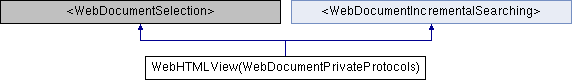

#import <WebDocumentPrivate.h>
Inheritance diagram for WebHTMLView(WebDocumentPrivateProtocols):

Additional Inherited Members | |
 Instance Methods inherited from <WebDocumentIncrementalSearching> Instance Methods inherited from <WebDocumentIncrementalSearching> | |
| (BOOL) | - searchFor:direction:caseSensitive:wrap:startInSelection: |
The documentation for this category was generated from the following file:
- Source/WebKit/mac/WebView/WebDocumentPrivate.h